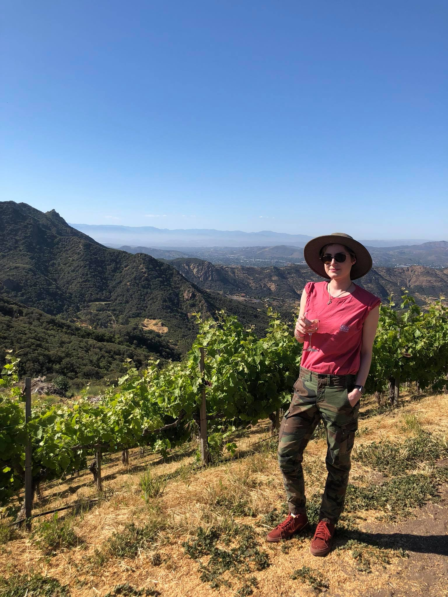

About Me
Hello everyone, my name is Paige Herbst. I’m 24 years old and currently a graduate student at the University of Denver. I was born in Minnesota and lived there for twelve years before moving to Indiana for middle school and high school. I attended my college undergraduate years at St. John’s University in Queens, New York where I majored in Marketing with a minor in International Studies. I had the great privilege of studying abroad three times. The summer after my freshmen year in college I traveled to Rome, Italy with my history class. During the first semester of my junior year I stayed in Paris, France for an entire semester where I had the opportunity to divulge myself into the country’s culture. After I graduated college I traveled to Dublin, Ireland with an International Marketing class where I had experience of meeting with top marketing firms and spending a whole day at the Google headquarters doing strategy games. I wasn’t sure what I wanted to do when I got back from Ireland. I ended up staying home to help my family out for a while and their eventual move to Wisconsin. After working with Amazon for several months I decided to enroll myself into graduate school and got into the University College at the University of Denver. At the University of Denver I am pursing a master’s degree in Information and Communications Technology with a concentration in Project Management. My goal in life (career wise) is to be a project manager at a gaming development company. Besides traveling, video games have always been a passion of mine.
Wanting to go into the gaming industry I knew I had to develop more technical skills. I decided to enroll into a Women's only coding bootcamp through the University of Denver. During the course of this bootcamp we get to learn over 20 coding languages/techniques. It has given me the opportunity to use my indepth researching skills and focus to accomplish new goals every week.